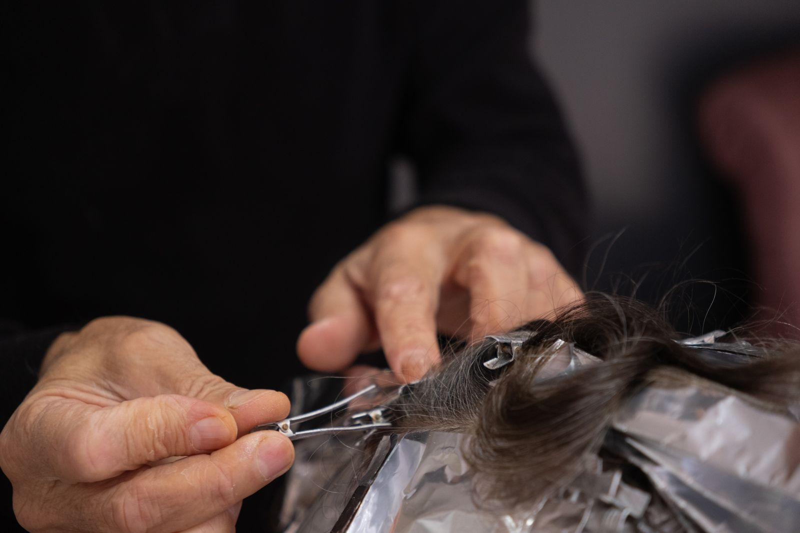

Blonde
The thing she is best known for, and blonde is where hairdressing goes wrong most often. Going lighter is where hair is most easily damaged, which is exactly why the strand comes first.
Colour, balayage, blonde work, perms and cutting on Philip Lane. Clients here write about being given a strand test before anything is committed to, which is a habit rather than a slogan.
Getting back to your own colour after a box dye is the job people arrive most worried about. It is also the one customers here describe leaving happiest with.
Rated 5.0 on Google, and not one review below five stars.
A strand test is a small, hidden section of your hair, coloured on its own first, so everyone can see what your hair actually does before the rest of it is committed. Hair that has been dyed, permed, boxed or bleached before does not always behave the way a chart says it will.
It is the least exciting thing in a salon and it is the difference between a colour you love and a colour you live with. Enough separate clients have noticed it happening here and written it down afterwards that it is one of the things this salon is known for, which does not happen unless it is done every time.
Being listened to is part of the method here. Your hair gets properly assessed and the plan talked through before anything starts, and you are given advice on looking after it afterwards. That sounds like nothing until you consider how often it is the thing that goes wrong elsewhere.
If your hair has had anything done to it before, say so when you ring, even if it was years ago and even if it was out of a box. It changes what is possible and it is much better known at the start.

Everything below is work that comes through this salon regularly.
The thing she is best known for, and blonde is where hairdressing goes wrong most often. Going lighter is where hair is most easily damaged, which is exactly why the strand comes first.
Hand painted rather than foiled, so it grows out softly instead of leaving a line. One of the things she is best known for.
Getting back to your own colour after years of dye is a job in itself, and the results tend to surprise people. Corrective work is slower and it is worth talking through properly before booking.
A treatment in its own right, which is rarer than it used to be, and hers have a reputation in north London.
Cuts for women and men both. Hair tends to feel healthier, softer and stronger afterwards, and the men who come once tend to keep coming back often for haircuts.
Being listened to is part of how this salon works, alongside the advice on looking after your hair between appointments. Neither has to be asked for.
Getting back to your own colour after a box dye is the job people arrive most worried about, and the one clients here describe leaving happiest with. Blonde work and balayage are what she is asked for most.
A name like this one reads women-only and it is not. Male clients come here regularly for cuts, and one reckons the perms are the best in north London.
Softer and stronger is what clients notice weeks later, which is what you would expect when the colour was tested before it was committed to.
Reviews here get answered by hand rather than ignored, which is a small thing that plenty of places never get round to.
On Philip Lane in London N15 4HL, in South Tottenham. The number is 07301 570499, and ringing is the quickest way to get a time, particularly for colour, which needs longer in the diary than a cut.
It is a small, hidden piece of your hair coloured on its own before the rest, so you can both see how your hair reacts and how the colour actually takes. It matters most if your hair has been coloured, bleached, permed or boxed before, because previous chemistry does not disappear. Enough clients have written about it unprompted that it is one of the things she is known for.
This page will not promise that, because it depends entirely on what is already on your hair and what condition it is in. Sometimes yes, sometimes it is better done over more than one visit to keep the hair intact. Ask before you book so you know what you are agreeing to, rather than finding out halfway through.
It is one of the things customers here write about, including one who had been struggling with exactly that after dye. Going back is usually slower than going away, because colour has to be worked out of the hair rather than simply put on top of it. Bring a photograph of where you want to end up and it can be talked through honestly.
No prices are printed here, because a trim and a full colour correction are not the same job and the honest answer depends on your hair. Ring, describe what you are after and what has been done to your hair before, and ask for a figure then.
Yes. The name reads as a women's salon, but one of the regulars writing here is a man who comes for both perms and haircuts. Worth saying because plenty of people would never think to ask.
Ringing first is sensible, especially for colour, which takes a long slot. Short-notice appointments do happen, but that is not a policy this page can promise on anyone's behalf.
Ringing is quickest. Use this if you would rather write it down, or if you want to send a photograph of where you are trying to get to.
Philip Lane, South Tottenham